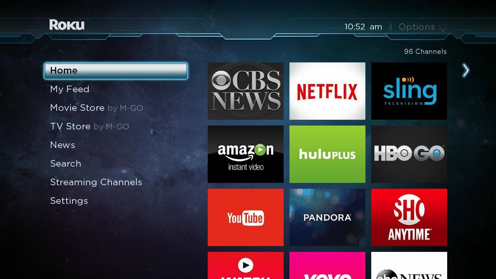

A.I. in Media

Awesome! If you are here, we are going to be talking about how A.I. is being used on entertainment platforms that we are all so familiar with. We will touch on a few components that make these platforms "intellgent."
Begin